结果版
标准版
价值版
全身健康评估报告
CENERAL HEALTH REPORT
- 姓名：{{nickName}}
- 性别：{{sex==1?'男':'女'}}
- 检测时间：{{inspectDateStr.slice(0,10)}}
- 经理人：{{relatedNo}}
- 联系方式：{{mobile.slice(0,11)}}
人工智能
健康筛查
健康可视 · 预警调理 · 远离疾病
本报告不作为医学临床诊断之用
以下是您的评估结果：
 

-
{{item.score}}
{{item.targetName}}
正常
轻度风险
中度风险
免疫力系统
您的免疫能力良好偏弱较差！
{{mianyiScore}}分
皮肤状况
{{inspectSkinView.totalScore}} 分
肤质{{inspectSkinView.skinTypeResult}}
肤龄{{inspectSkinView.age}}
肤色{{skinColor[inspectSkinView.color]}}
重点关注
{{item.name}}{{item.score}}分{{item.count}} 个好于 {{item.percent}}%的人
护肤建议：
{{item.paraSuggestion}}
有待改善
{{item.name}}{{item.score}}分{{item.count}} 个好于 {{item.percent}}%的人
护肤建议：
{{item.paraSuggestion}}
继续保持
{{item.name}}{{item.score}}分{{item.count}} 个好于 {{item.percent}}%的人
护肤建议：
{{item.paraSuggestion}}
个性化健康建议
膳食建议
{{item.personality}}
{{item.proposal}}
{{item.simpleDescription}}
运动建议
{{item.personality}}
建议食谱
day{{index+1}}
名称荤菜素菜主食
早餐
- {{bre.foodName}}
- {{bre.foodName}}
- {{bre.foodName}}
早加餐
- {{ba.foodName}}
午餐
- {{lun.foodName}}
- {{lun.foodName}}
- {{lun.foodName}}
午加餐
- {{la.foodName}}
晚餐
- {{lun.foodName}}
- {{lun.foodName}}
- {{lun.foodName}}
详细指标及建议
{{second.targetName}}{{second.score}}正常
{{third.targetName}}{{third.score}} {{third.inspectStandard==1?'正常':(third.inspectStandard==2?'偏高':'偏低')}}
{{site.targetName}}：
正常轻度风险中度风险

指标解读
{{site.explain}}
改善建议
膳食建议
{{index+1}}、{{jinayi.personality}}
{{index+1}}、{{jinayi.proposal}}
{{jinayi.simpleDescription}}
营养建议
{{index+1}}、{{jinayi.personality}}
{{jinayi.simpleDescription}}
运动和生活方式建议
{{index+1}}、{{jinayi.personality}}